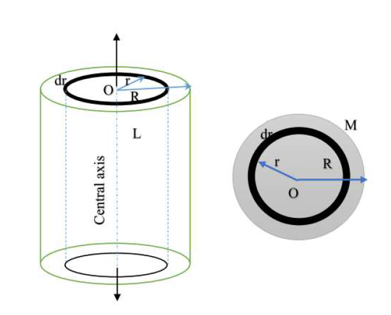
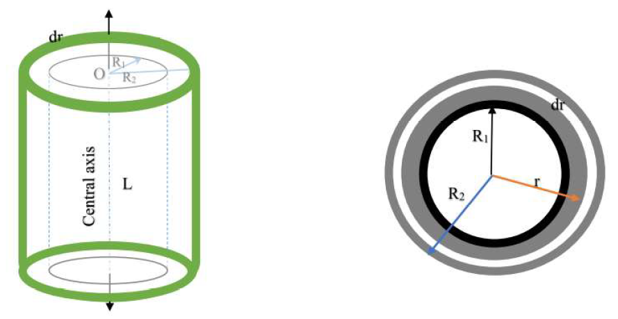
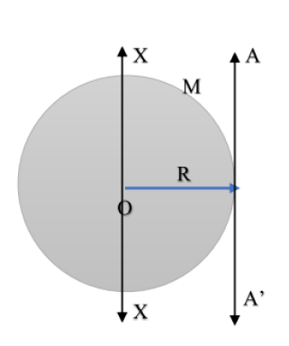
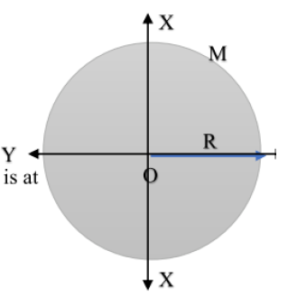
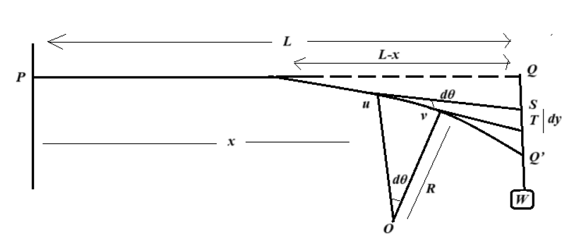

ENGINEERING PHYSICS UNIT 1 PART B
1. Derive the expression for the moment of inertia of a hollow and solid cylinder. Also discuss the application of it.
Moment of Inertia of a Solid Cylinder
Objective: Derive the moment of inertia (\( I \)) of a solid cylinder of uniform mass \( M \), radius \( R \), and length \( L \) about its central longitudinal axis.

Step 1: Define Mass Density
Assuming the mass is uniformly distributed, the volume density \( \rho \) is:
$$ \rho = \frac{\text{Total Mass}}{\text{Total Volume}} = \frac{M}{\pi R^2 L} $$
Step 2: Choose a Differential Element
Imagine the cylinder is composed of many thin, concentric cylindrical shells. Consider one such shell with:
- Radius: \( r \)
- Thickness: \( dr \)
- Length: \( L \)
The volume \( dV \) of this thin shell is circumference \( \times \) length \( \times \) thickness:
$$ dV = 2\pi r \cdot L \cdot dr $$
Step 3: Determine Mass of the Element (dm)
The mass of the element is density \( \times \) volume:
$$ dm = \rho \cdot dV $$
Substitute \( \rho \) from Step 1:
$$ dm = \left( \frac{M}{\pi R^2 L} \right) (2\pi r \cdot L \cdot dr) $$
Cancel common terms (\( \pi \) and \( L \)):
$$ dm = \frac{2M}{R^2} r \, dr $$
Step 4: Integrate
The moment of inertia of the small element is \( dI = dm \cdot r^2 \).
To find the total \( I \), integrate from the center (\( r=0 \)) to the outer surface (\( r=R \)):
$$ I = \int_{0}^{R} r^2 \cdot dm $$
$$ I = \int_{0}^{R} r^2 \left( \frac{2M}{R^2} r \, dr \right) $$
Pull constants out:
$$ I = \frac{2M}{R^2} \int_{0}^{R} r^3 \, dr $$
$$ I = \frac{2M}{R^2} \left[ \frac{r^4}{4} \right]_{0}^{R} $$
$$ I = \frac{2M}{R^2} \left( \frac{R^4}{4} \right) = \frac{1}{2} M R^2 $$
\( I_{\text{solid}} = \frac{1}{2} M R^2 \)
Moment of Inertia of a Hollow Cylinder
Objective: Derive the moment of inertia for a hollow cylinder with Mass \( M \), Length \( L \), Inner Radius \( R_1 \), and Outer Radius \( R_2 \).

Step 1: Define Mass Density
The volume of the material (solid part) is \( V = \pi (R_2^2 - R_1^2) L \).
$$ \rho = \frac{M}{\pi (R_2^2 - R_1^2) L} $$
Step 2: Choose a Differential Element
Consider a thin shell within the material boundaries (where \( R_1 < r < R_2 \)) with thickness \( dr \).
$$ dm = \rho \cdot (2\pi r \cdot L \cdot dr) $$
Substitute \( \rho \):
$$ dm = \frac{2M}{R_2^2 - R_1^2} r \, dr $$
Step 3: Integrate
Integrate from the Inner Radius (\( R_1 \)) to the Outer Radius (\( R_2 \)):
$$ I = \int_{R_1}^{R_2} r^2 \cdot dm $$
$$ I = \frac{2M}{R_2^2 - R_1^2} \int_{R_1}^{R_2} r^3 \, dr $$
$$ I = \frac{2M}{R_2^2 - R_1^2} \left[ \frac{r^4}{4} \right]_{R_1}^{R_2} $$
$$ I = \frac{2M}{R_2^2 - R_1^2} \cdot \frac{1}{4} (R_2^4 - R_1^4) $$
Step 4: Mathematical Simplification
Use the identity \( a^4 - b^4 = (a^2 - b^2)(a^2 + b^2) \):
$$ (R_2^4 - R_1^4) = (R_2^2 - R_1^2)(R_2^2 + R_1^2) $$
Substitute this back into the equation:
$$ I = \frac{M}{2(R_2^2 - R_1^2)} (R_2^2 - R_1^2)(R_2^2 + R_1^2) $$
Cancel the term \( (R_2^2 - R_1^2) \).
\( I_{\text{hollow}} = \frac{1}{2} M (R_1^2 + R_2^2) \)
Applications of Moment of Inertia
Moment of Inertia (Rotational Inertia) plays a critical role in engineering and mechanics.
1. Flywheels (Solid Cylinders)
Flywheels in engines are essentially heavy solid cylinders. They utilize a high Moment of Inertia (\( I = \frac{1}{2}MR^2 \)) to store rotational kinetic energy (\( KE = \frac{1}{2}I\omega^2 \)). This resists sudden changes in speed, smoothing out the power delivery in internal combustion engines.
2. Drive Shafts (Hollow Cylinders)
Automobile drive shafts are often hollow. A hollow shaft has a high moment of inertia relative to its mass because the mass is distributed further from the center. This provides a high strength-to-weight ratio, allowing it to transmit torque efficiently without adding excess weight to the vehicle.
3. Industrial Rollers
Conveyor belt rollers are hollow cylinders designed to resist bending forces while maintaining specific rotational properties to move goods efficiently.
2. Find the expression for Moment of Inertia of a Solid Disc with respect to its tangents i) Parallel to the disc surface and (ii) Perpendicular to the disc surface.
Objective: Derive the moment of inertia for a solid disc about (i) A tangent parallel to the disc surface and (ii) A tangent perpendicular to the disc surface.
We use the Parallel Axis Theorem: \( I = I_{CM} + Md^2 \), where \( I_{CM} \) is the moment of inertia about a parallel axis through the center of mass, and \( d \) is the distance between axes.
(i) Tangent Parallel to the Disc Surface
This axis touches the rim and lies within the plane of the disc.

Step 1: Identify Parameters
- Parallel Axis through Center: The Diameter of the disc.
- Known \( I_{CM} \): \( I_{\text{diameter}} = \frac{1}{4}MR^2 \)
- Distance (\( d \)): The radius \( R \).
Step 2: Apply Theorem
$$ I = I_{\text{diameter}} + Md^2 $$
$$ I = \frac{1}{4}MR^2 + M(R)^2 $$
$$ I = \frac{1}{4}MR^2 + \frac{4}{4}MR^2 $$
\( I = \frac{5}{4} MR^2 \)
(ii) Tangent Perpendicular to the Disc Surface
This axis touches the rim but stands perpendicular to the face of the disc.

Step 1: Identify Parameters
- Parallel Axis through Center: The Central Axis (Polar axis).
- Known \( I_{CM} \): \( I_{\text{central}} = \frac{1}{2}MR^2 \)
- Distance (\( d \)): The radius \( R \).
Step 2: Apply Theorem
$$ I = I_{\text{central}} + Md^2 $$
$$ I = \frac{1}{2}MR^2 + M(R)^2 $$
$$ I = \frac{1}{2}MR^2 + \frac{2}{2}MR^2 $$
\( I = \frac{3}{2} MR^2 \)
3. (i) Derive an expression for the Torsional Couple per unit angular twist when a cylinder is twisted. (12 Marks)
Consider: A solid cylinder of length \( L \) and radius \( R \) fixed at the upper end and twisted at the lower end by an angle \( \theta \).
![[Image of torsion of a cylinder]](torsion_of_cylinder.png)
Step 1: Geometry of Twist
Consider a cylindrical shell of radius \( x \) and thickness \( dx \) within the cylinder.
- Let \( \phi \) be the angle of shear.
- Let \( \theta \) be the angle of twist.
From the arc length relation: \( L\phi = x\theta \)
$$ \implies \phi = \frac{x\theta}{L} $$
Step 2: Shear Stress and Force
Using Modulus of Rigidity (\( G \)):
$$ \text{Shear Stress} = G \times \text{Strain} = G\phi = \frac{Gx\theta}{L} $$
The area of the shell cross-section is \( dA = 2\pi x \, dx \).
The shearing force (\( dF \)) on this shell is Stress \( \times \) Area:
$$ dF = \left( \frac{Gx\theta}{L} \right) (2\pi x \, dx) = \frac{2\pi G \theta}{L} x^2 \, dx $$
Step 3: Torque on the Shell
The torque (moment of force) \( d\tau \) about the axis is force \( \times \) distance (\( x \)):
$$ d\tau = dF \cdot x = \left( \frac{2\pi G \theta}{L} x^2 \, dx \right) \cdot x $$
$$ d\tau = \frac{2\pi G \theta}{L} x^3 \, dx $$
Step 4: Total Twisting Couple
Integrate from the center (\( x=0 \)) to the surface (\( x=R \)):
$$ \tau = \int_{0}^{R} \frac{2\pi G \theta}{L} x^3 \, dx $$
$$ \tau = \frac{2\pi G \theta}{L} \left[ \frac{x^4}{4} \right]_{0}^{R} $$
$$ \tau = \frac{\pi G R^4 \theta}{2L} $$
Step 5: Torsional Couple per Unit Twist (C)
The couple per unit twist is \( C = \tau / \theta \):
\( C = \frac{\pi G R^4}{2L} \)
ii. A solid sphere of mass 2kg rotates with respect to its diameter with angular speed 5 rotation per second. The radius of the sphere is 25 cm. What is the (i) Moment of inertia and (ii) Kinetic energy associated with the rotation of the sphere with respect to its diameter?(4)
Given Data:
- Mass (\( M \)): 2 kg
- Radius (\( R \)): 25 cm = 0.25 m
- Frequency (\( f \)): 5 rot/s
- Angular Velocity (\( \omega \)): \( 2\pi f = 2\pi(5) = 10\pi \) rad/s
(i) Moment of Inertia (I)
Step 1: Apply Formula
For a solid sphere rotating about its diameter, the Moment of Inertia is:
$$ I = \frac{2}{5} MR^2 $$
Step 2: Substitution
$$ I = \frac{2}{5} \times 2 \times (0.25)^2 $$
$$ I = 0.8 \times 0.0625 $$
\( I = 0.05 \, \text{kg m}^2 \)
(ii) Rotational Kinetic Energy (K)
Step 1: Apply Formula
The rotational kinetic energy is given by:
$$ K = \frac{1}{2} I \omega^2 $$
Step 2: Substitution
$$ K = \frac{1}{2} (0.05) (10\pi)^2 $$
$$ K = 0.025 \times 100 \pi^2 $$
$$ K = 2.5 \pi^2 $$
(Using \( \pi^2 \approx 9.87 \))
$$ K \approx 2.5 \times 9.87 $$
\( K \approx 24.67 \, \text{Joules} \)
4.Give the theory and experimental method of finding young’s modules of a cantilever.
(A) Theory (Derivation)
Definition: A cantilever is a beam fixed at one end (\( x=0 \)) and loaded at the other free end (\( x=l \)).

[Image of cantilever beam bending]
Step 1: Bending Moment Equation
Consider a section at distance \( x \) from the fixed end.
The external bending moment due to load \( W \) (weight) acting at the free end distance \( (l-x) \) is:
$$ M_{ext} = W(l - x) $$
The internal bending moment is related to the radius of curvature \( R \) and flexural rigidity \( EI \):
$$ M_{int} = \frac{EI}{R} = EI \frac{d^2y}{dx^2} $$
Equating for equilibrium:
$$ EI \frac{d^2y}{dx^2} = W(l - x) $$
Step 2: Slope (First Integration)
Integrate w.r.t \( x \):
$$ EI \frac{dy}{dx} = \int (Wl - Wx) dx = Wlx - \frac{Wx^2}{2} + C_1 $$
Boundary Condition: At the fixed end (\( x=0 \)), the beam is horizontal, so slope \( \frac{dy}{dx} = 0 \).
$$ \therefore C_1 = 0 \implies EI \frac{dy}{dx} = Wlx - \frac{Wx^2}{2} $$
Step 3: Deflection (Second Integration)
Integrate again w.r.t \( x \):
$$ EI y = \int \left( Wlx - \frac{Wx^2}{2} \right) dx = \frac{Wlx^2}{2} - \frac{Wx^3}{6} + C_2 $$
Boundary Condition: At the fixed end (\( x=0 \)), there is no depression, so \( y = 0 \).
$$ \therefore C_2 = 0 $$
Step 4: Maximum Depression at Free End
The maximum depression \( y \) occurs at the free end where \( x = l \).
Substitute \( x=l \) into the equation:
$$ EI y = \frac{Wl(l)^2}{2} - \frac{W(l)^3}{6} $$
$$ EI y = \frac{Wl^3}{2} - \frac{Wl^3}{6} = \frac{3Wl^3 - Wl^3}{6} = \frac{2Wl^3}{6} $$
$$ y = \frac{Wl^3}{3EI} $$
Step 5: Young's Modulus Formula
For a rectangular beam of breadth \( b \) and thickness \( d \), the geometric moment of inertia is \( I = \frac{bd^3}{12} \).
Substitute \( I \) into the depression formula:
$$ y = \frac{Wl^3}{3E (bd^3/12)} = \frac{4Wl^3}{Ebd^3} $$
Rearranging to find Young's Modulus (\( E \)):
\( E = \frac{4Wl^3}{ybd^3} \)
Where \( W = Mg \) (Mass \(\times\) Gravity).
(B) Experimental Method
Apparatus
Cantilever beam (wooden scale or metal bar), G-clamp, Weight hanger, Slotted weights, Traveling microscope (or pin and scale), Vernier caliper, Screw gauge.
Procedure
- Clamp one end of the beam firmly to the table edge.
- Fix a pin vertically at the free end of the beam (or use a microscope to focus on a mark).
- Suspend a weight hanger at the free end. Note the initial reading of the pin position using a traveling microscope.
- Add weights in steps (e.g., 50g, 100g) and record the microscope reading for the depression (\( y \)) each time.
- Remove weights in the same steps and record readings again (loading and unloading) to minimize error.
- Calculate the mean depression \( y \) for a specific load \( M \).
- Measure the length (\( l \)) of the cantilever from the fixed end to the load point.
- Measure the breadth (\( b \)) using a Vernier caliper and thickness (\( d \)) using a Screw gauge at multiple places.
Calculation
Plot a graph of Load (\( M \)) vs. Depression (\( y \)). It should be a straight line.
Find the slope \( \frac{M}{y} \) from the graph.
Calculate \( E \) using the derived formula:
$$ E = \frac{4 g l^3}{b d^3} \times \left( \frac{M}{y} \right) $$
5.What is uniform bending? Derive an expression for the elevation at the centre of a beam which is loaded at both end. Describe an experiment to
determine Young’s modulus of a beam by uniform bending.
1. Definition of Uniform Bending
Uniform bending is the state of a beam where the bending moment is constant throughout the length of the beam (between the supports). As a result, the beam bends into the form of a circular arc.
2. Derivation of Expression for Elevation
Consider: A beam of length \( l \) (between knife edges) arranged symmetrically. Two equal loads \( W \) are suspended from the ends of the beam at a distance \( a \) from the knife edges (overhangs).
[Image of uniform bending diagram]
Step 1: Radius of Curvature
The external bending moment is \( M = Wa \) (Force \(\times\) distance).
The internal bending moment is \( \frac{EI}{R} \).
Equating them:
$$ \frac{EI}{R} = Wa \implies R = \frac{EI}{Wa} $$
(Where \( R \) is the radius of curvature, \( E \) is Young's modulus, \( I \) is geometric moment of inertia).
Step 2: Geometry of the Circle
Since the beam bends into a circular arc, consider the property of intersecting chords. Let \( y \) be the elevation at the center and \( l \) be the distance between knife edges.
$$ y(2R - y) = \frac{l}{2} \cdot \frac{l}{2} $$
$$ 2Ry - y^2 = \frac{l^2}{4} $$
Since the elevation \( y \) is very small compared to \( R \), we neglect \( y^2 \).
$$ 2Ry = \frac{l^2}{4} \implies y = \frac{l^2}{8R} $$
Step 3: Substitution
Substitute the value of \( R \) from Step 1:
$$ y = \frac{l^2}{8 (EI / Wa)} = \frac{Wal^2}{8EI} $$
Step 4: Geometric Moment of Inertia
For a rectangular beam of breadth \( b \) and thickness \( d \):
$$ I = \frac{bd^3}{12} $$
Substitute \( I \) into the elevation equation:
$$ y = \frac{Wal^2}{8E (bd^3/12)} = \frac{12Wal^2}{8Ebd^3} $$
Step 5: Final Expression
$$ y = \frac{3Wal^2}{2Ebd^3} $$
Rearranging to find Young's Modulus (\( E \)):
\( E = \frac{3Wal^2}{2ybd^3} \)
3. Experiment to Determine Young's Modulus
Apparatus: A rectangular beam (scale), two knife edges, two weight hangers with slotted weights, a pin (fixed at the center of the beam), a traveling microscope, Vernier caliper, and Screw gauge.
Procedure
- Place the beam symmetrically on two knife edges separated by a distance \( l \).
- Suspend two weight hangers of equal mass from the ends of the beam (at distance \( a \) from knife edges).
- Focus the traveling microscope on the tip of the pin placed at the center of the beam.
- Note the initial reading of the microscope with the dead load (weight of hangers only).
- Add weights \( M \) (e.g., 50g) to both hangers simultaneously and record the new position of the pin (elevation).
- Continue adding weights in steps and noting the readings. Then decrease the weights in the same steps and note readings again (Loading and Unloading).
- Calculate the mean elevation \( y \) for a specific load \( M \).
- Measure the length between knife edges (\( l \)) and the length of overhang (\( a \)).
- Measure breadth (\( b \)) and thickness (\( d \)) of the beam using calipers/screw gauge.
Calculation
Plot a graph of Load (\( M \)) vs Elevation (\( y \)). It will be a straight line.
Find the slope \( \frac{M}{y} \) from the graph.
Using the formula (where \( W = Mg \)):
$$ E = \frac{3 g a l^2}{2 b d^3} \left( \frac{M}{y} \right) $$
6.Explain with necessary theory the determination of young’s modulus of elasticity of the material of the beam supported at its ends and loaded in the middle. Describe an experiment to determine the young’s modulus of the material using this method.
(A) Theory: Beam Supported at Ends, Loaded in Middle
Consider a beam of length \( l \) (between knife edges) supported at its ends A and B. A load \( W \) is applied at the center (point C). This setup causes Non-Uniform Bending because the bending moment varies along the length of the beam.
Step 1: Bending Moment Equation
The reaction at each support (A and B) is \( W/2 \) due to symmetry.
Consider a section at a distance \( x \) from support A (where \( x < l/2 \)).
The external bending moment is:
$$ M_{ext} = \text{Reaction} \times \text{Distance} = \frac{W}{2} \cdot x $$
The internal bending moment is related to the flexural rigidity \( EI \):
$$ EI \frac{d^2y}{dx^2} = \frac{Wx}{2} $$
Step 2: First Integration (Slope)
Integrate w.r.t \( x \):
$$ EI \frac{dy}{dx} = \frac{Wx^2}{4} + C_1 $$
Boundary Condition: At the center of the beam (\( x = l/2 \)), the tangent is horizontal, so the slope \( \frac{dy}{dx} = 0 \).
$$ 0 = \frac{W(l/2)^2}{4} + C_1 \implies C_1 = -\frac{Wl^2}{16} $$
Substituting \( C_1 \):
$$ EI \frac{dy}{dx} = \frac{Wx^2}{4} - \frac{Wl^2}{16} $$
Step 3: Second Integration (Depression)
Integrate again w.r.t \( x \):
$$ EI y = \frac{Wx^3}{12} - \frac{Wl^2x}{16} + C_2 $$
Boundary Condition: At the support A (\( x=0 \)), there is no vertical displacement, so \( y = 0 \).
$$ \therefore C_2 = 0 $$
Step 4: Maximum Depression at Center
The maximum depression \( y \) occurs at the center where \( x = l/2 \). Substitute this into the equation:
$$ EI y = \frac{W(l/2)^3}{12} - \frac{Wl^2(l/2)}{16} $$
$$ EI y = \frac{Wl^3}{96} - \frac{Wl^3}{32} $$
Finding a common denominator (96):
$$ EI y = \frac{Wl^3 - 3Wl^3}{96} = -\frac{2Wl^3}{96} = -\frac{Wl^3}{48} $$
Considering only the magnitude (dropping the negative sign):
$$ y = \frac{Wl^3}{48EI} $$
Step 5: Young's Modulus Formula
For a rectangular beam, \( I = \frac{bd^3}{12} \). Substitute this into the depression formula:
$$ y = \frac{Wl^3}{48E (bd^3/12)} = \frac{12Wl^3}{48Ebd^3} = \frac{Wl^3}{4Ebd^3} $$
Rearranging for \( E \):
\( E = \frac{Wl^3}{4bd^3 y} \)
(B) Experimental Method (Pin & Microscope)
Apparatus: Beam (scale), two knife edges, weight hanger, slotted weights, pin (pointer), traveling microscope, Vernier caliper, Screw gauge.
[Image of cantilever beam bending]
Procedure
- The given beam is placed symmetrically on two knife edges separated by a distance \( l \).
- A weight hanger is suspended exactly at the center of the beam.
- A pin is fixed vertically at the center of the beam to serve as a pointer.
- A traveling microscope is placed in front of the setup and focused on the tip of the pin.
- Note the initial reading of the microscope (vertical scale) with the dead load (hanger only).
- Add weights \( M \) (e.g., 50g) to the hanger and record the new reading of the pin (depression). Increase the load in steps.
- Decrease the load in the same steps and record the readings again (unloading) to check for elasticity.
- Calculate the mean depression \( y \) for a given load \( M \).
- Measure the length \( l \) (distance between knife edges), breadth \( b \) (using Vernier caliper), and thickness \( d \) (using Screw gauge).
Calculation
Plot a graph of Load (\( M \)) vs Depression (\( y \)). It should be a straight line passing through the origin.
Find the slope \( \frac{M}{y} \) from the graph.
Calculate Young's Modulus using the formula (where \( W = Mg \)):
$$ E = \frac{g l^3}{4 b d^3} \times \left( \frac{M}{y} \right) $$